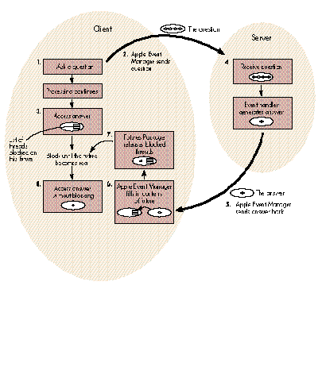

Interprocess communication (IPC) promises to provide a solution to problems that
can't ordinarily be solved in a single-tasking, single-machine environment. But
attempts at implementing IPC with traditional programming techniques lead to
cumbersome code that doesn't come close to realizing IPC's potential. This article
shows an example of using threads and futures to do IPC in a way that allows you to
achieve concurrency with clean, robust code.
In the article "Threads on the Macintosh" in Issue 6 of develop , I identified a potential
problem with interprocess communications when you're using the client-server
model. Simply put, if you don't use threads when you're using the client- server model
to implement IPC, the result could be deadlock. The deadlock occurs because each
application is capable of only a single train of thought. The client expects an answer to
a question posed to the server but never receives that answer because the server must
receive an answer to its question before it can respond. The result is that each party is
waiting for answers to its own questions before it can proceed.
Although "Threads on the Macintosh" sounded the alarm about the communications
deadlock problem, it didn't go into detail about how threads can be applied to solve the
problem. That's the purpose of this article. Specifically, this article shows how you
can avoid client-server deadlocks by using threads and a new facility called futures .
The Futures Package has been integrated seamlessly with Apple events. In this article,
we'll use Apple events as the generic facility for implementing IPC. The sample code
presented here appears on the Developer Essentials disc for this issue.
Before discussing futures in detail, let's review some of the basics about threads.
Threads provide multiple trains of thought for your application. If your application is
doing more than one thing at a time, threads allow you to simplify your code. Instead of
juggling between multiple tasks, you start a separate thread to handle each individual
task. You then have multiple program counters, one for each thread. Of course, the
threads don't actually run simultaneously on a single CPU. They share the CPU,
cooperatively trading control by calling a special function that says, "Let the other
threads in this application have some CPU time."
Ideally, when you're writing code for IPC, you'd like things to work such that
whenever the client poses a question, it gets an immediate answer. This situation would
translate into nice linear code, such as the following:
*
*code that prepares the question
*
answer := Ask(question);
*
*Code that uses the answer
*
The semantics would be very simple: A question is prepared, and then it's "asked." The
Ask function waits synchronously for the answer to be returned. When it's returned,
execution continues and the answer is used.
Unfortunately, this code suffers from a fatal flaw: the synchronous nature of the Ask
function will cause a deadly embrace in some situations. What if, as we saw above, the
client never receives an answer because the server needs to ask something of the client
before it can reply? This is an all too common situation.
Threads allow you to circumvent the deadlock problem by making each application have
a client and server portion so that both sides can ask and answer questions of each
other. In other words, the client and server portions of each application are assigned to
separately executing threads. IPC then works as follows: Application 1's client asks a
question of application 2's server, and application 2's server must ask a question
before it can answer. However, application 1 is able to field this question because even
though its client portion is waiting for an answer, its server portion is available to
answer application 2's question. Because the answering and the questioning portions of
each program are able to function independently, a hangup in the client or the server
doesn't bring the application to a halt.
In the "plain threads" situation just described, notice that execution of the client
thread is still held up while the client is waiting for an answer. What futures do is to
postpone or even eliminate this delay in processing, giving the thread a chance to do
related work before blocking. In this way, futures extend the capacity of threads to
maximize the efficient use of the CPU.
In the futures implementation, when a question is posed, the application never has to
wait for an answer; it can continue execution immediately. This may seem impossible:
in the above example, how can the Ask function return immediately when it must
supply an answer to the question? Mustn't it wait until the answer is received? No,
because the answer that's returned by Ask is a future. The future doesn't contain the
information that the real answer contains. Instead, it contains information that says
"this answer isn't 'real' yet." Your code keeps executing, thinking that it has the
answer, but it really doesn't. At some point later, when the real answer is received by
the Apple Event Manager, the future is automatically transformed into the real
answer, with all the information that was requested.
Note that when it comes time to get the contents out of an answer, and the answer could
be a future, you must be executing in a thread other than the main event loop thread,
or the result will be deadlock. This is because a thread that attempts to access the
contents of a future is blocked until the real answer is received. And since the real
answer to a future is received by the main event loop, you can't risk blocking the main
loop by using it to access the future. The solution is to fork a thread to access the
future. This way, your main event loop keeps running, receiving Apple events and
passing them to the Apple Event Manager.
In some situations you'll need to find out whether an Apple event is a future or not, and
you'll need to do this without blocking. This is done through a call to the IsFuture
function. It returns a Boolean value of TRUE if the Apple event you passed in is a
future. Of course, unlike the Apple event accessor functions, it never blocks when you
call it.
So how do you work with futures in a program? That is, how do you receive a "future"
answer to a question and then replace that future with the real answer when it becomes
available? You first prepare your question event just as you would any other Apple
event. However, instead of sending out the question with the AESend function, you call
the Ask function in the Futures Package. Note that it's never necessary to install a
handler for the answer, as is sometimes the case with AESend. The code that handles the
answer is neatly placed after the call to Ask.
Ask returns a fake answer--the future--as a placeholder for the real answer that is
to come. Since Ask returns immediately, the client can continue processing. In the
meantime, the server has time to receive the question and prepare an answer. The
main event loop of the server application receives a high-level event, which it passes
to the Apple Event Manager via a call to AEProcessAppleEvent. The Apple Event
Manager calls the appropriate event handler routine to receive the question and
generate an answer. The client is sent this answer from the server as a normal Apple
event reply. Replies that are answers to a future have a special code signifying that
they correspond to a particular future. AEProcessAppleEvent recognizes this code and
automatically transfers the contents of the real answer into the future. It also calls a
hidden routine in the Futures Package that wakes up the threads that are blocked on the
future. At this point, the future is no longer a future.
Figure 1 illustrates the sequence of events that are set in motion when a question is
asked.
The example shown here is a modified version of the TESample program that ships
with the Macintosh Programmer's Workshop. When you start the program, it brings
up a window for user interaction as usual. You'll notice that there's a new Test menu,
with two items that you can choose, Ping and Ping2. First we'll discuss Ping.

Figure 1 The Transformation of a Future Into a Real Answer
Choose the Ping item to start a conversation with another copy of the program running
somewhere on your network. The PPC Browser dialog box appears and prompts you to
select another running copy of the program on your machine or elsewhere on the
network. The copy you select will be the server; the application that posed the dialog
will be the client. At this point you'll hear some beeps. What this means is that the
client is asking the server questions. The server beeps when it receives a question, and
then it returns an answer. You can start as many simultaneous conversations as you
like between any two copies of the program. In this way, you establish a number of
simultaneous client- server relationships between the various copies of this
application. You can even have an application be a client of itself. When this started
working for the first time, we had great fun pinging messages around our network (all
in the name of testing, of course).
When you select the name of the server from the PPC Browser dialog box, your client
program extracts the server's address so that it knows where to direct questions. The
client then starts a thread that sends messages to the server. If the answer the client
receives is a future, the thread is blocked. When the real answer arrives, the thread
is unblocked and is able to access the contents of the answer. After finishing with the
answer, the thread properly disposes of both the question and the answer events with
the AEDisposeDesc function. The thread then terminates.
Note that the application continues to service the text editing window as usual while
servicing incoming requests and driving the conversations it's responsible for. This
illustrates that the main event loop is happy and healthy even though many threads
may be blocked. Since a thread is not swapped in when it's blocked, a blocked thread
has no impact on performance. Practical experience shows that these
communications-oriented threads end up spending most of their time blocked.
The second menu item, Ping2, allows you to select two processes. Questions are sent to
these processes at just about the same time. This example takes advantage of the
asynchrony provided by futures. The first Ask call returns a future. The second Ask is
called before the real answer is available for the first call. Then both answers are
accessed. This strategy can be used to drive two server CPUs in parallel.
The following code initializes the Threads and Futures Packages and installs an Apple
event handler to process ping events. It goes in the main program, right before the
main event loop routine is called.
#pragma segment Main
main()
{
•
• initialization stuff from TESample
•
// Initialize the Threads Package.
InitThreads(false); // Note the API change.
// Initialize the Futures Package.
InitFutures();
// Install a handler for the ping messages in the Apple events
// dispatch table, so that when we receive these events, this
// routine will be called.
AEInstallEventHandler(kSillyEventClass, kPingEvent,
(EventHandlerProcPtr) &HandlePing, 0, false);
EventLoop(); /* Call the main event loop. */
}
The following is the handler that processes the ping Apple event. Note that it's in a
separate code segment so that procedure pointers to it are jump-table relative.
#pragma segment handlers
pascal OSErr HandlePing(AppleEvent question, AppleEvent answer,
long handlerRefcon)
{
char* stringPtr;
char stringBuffer[100];
long actualSize;
DescType actualType;
OSErr theErr;
// Beep to indicate that the question was received.
SysBeep(120);
// Extract a string from the question.
theErr = AEGetParamPtr(&question, 'qstr', 'TEXT', &actualType,
(Ptr) stringBuffer, sizeof(stringBuffer)-1,
&actualSize);
// Load a string into the answer.
stringPtr = "I'm just fine.";
theErr = AEPutParamPtr(&answer, 'rstr', 'TEXT', stringPtr,
strlen(stringPtr));
return(noErr);
}
Below is the main event loop. Well, sort of. I cut out some stuff for the sake of brevity.
The important thing here is the call to Yield, which gives CPU time to other threads.
It's interesting to note that the standard call to WaitNextEvent (not shown) is like
Yield in the sense that it gives CPU time to other MultiFinderTM processes. One
significant difference is that WaitNextEvent requires that you supply a sleep time of at
least one tick when yielding control to other applications. The semantics of the Yield
function allow you to regain control as soon as possible, with no obligatory sleep
period. The sleep period, as well as the Process Manager's scheduling algorithm, affect
the speed with which applications can exchange control and therefore affect the
round-trip speed of an IPC transaction.
#pragma segment Main
void EventLoop()
{
•
• declaration and initialization stuff from TESample
•
do {
•
• Get an event from the event queue and pass it
• to DoEvent.
•
// Yield control to other threads.
Yield();
} while ( true ); /* Loop forever. We quit via ExitToShell. */
} /*EventLoop*/
DoEvent decides what to do with events picked up by the main event loop. Here I've
inserted an entry in the case statement that passes high-level events to the Apple
Event Manager routine, AEProcessAppleEvent. Its job is to forward the Apple event to
the appropriate handler, in this case HandlePing.
#pragma segment Main
void DoEvent(event)
EventRecord *event;
{
•
• declaration stuff from TESample
•
switch ( event->what ) {
// If this is a high-level event, pass it to the Apple Event Manager.
case kHighLevelEvent:
AEProcessAppleEvent(event);
break;
•
• Process other kinds of events.
•
}
} /*DoEvent*/
At this point, we've touched on all of the boilerplate. Now let's take a look at the Ask
function at work. Note that a real program would check for errors.
#pragma segment Main
void DoMenuCommand(menuResult)
{
•
• declaration and initialization stuff
•
switch ( menuID ) {
•
• Process other kinds of menus.
•
case mTest:
switch ( menuItem ) {
case iPing:
{
OSErr theErr;
TargetID theTargetID;
PortInfoRec thePortInfo;
AEAddressDesc theAddressDesc;
ThreadHandle theThread;
AppleEvent question;
AppleEvent answer;
char* stringPtr;
char stringBuffer[100];
long actualSize;
DescType actualType;
// Get the target address of the other process.
theErr = PPCBrowser("\p", "\p", false,
&theTargetID.location, &thePortInfo,
nil, "\p");
if (theErr) break;
theTargetID.name = thePortInfo.name;
theErr = AECreateDesc(typeTargetID,
(Ptr) &theTargetID,
sizeof(TargetID), &theAddressDesc);
// Start the thread that pings.
if (InNewThread(&theThread, kDefaultStackSize))
{
long i;
for (i=0; i<30; i++)
{
Yield();
// Build an Apple event question that is addressed to the user-
// selected target.
theErr = AECreateAppleEvent
(kSillyEventClass,
kPingEvent, &theAddressDesc,
kAutoGenerateReturnID,
kAnyTransactionID,
&question);
// Load a string into the question.
stringPtr =
"Hello server, how are you doing?";
theErr = AEPutParamPtr(&question,
'qstr', 'TEXT',
stringPtr, strlen(stringPtr));
// Ask the question.
theErr = Ask(question, &answer);
// If the answer is not a future so soon after Ask, something is
// probably wrong.
if (!IsFuture(answer)) Debugger();
// Extract a string from the answer. This will cause the thread to
// block until the answer is received.
theErr = AEGetParamPtr(&answer,
'rstr', 'TEXT',
&actualType,
(Ptr) &stringBuffer,
sizeof(stringBuffer)-1,
&actualSize);
// If the answer is still a future after you retrieve a string from
// the answer, something is definitely wrong.
if (IsFuture(answer)) Debugger();
// Dispose of the answer and the question.
theErr = AEDisposeDesc(&answer);
theErr = AEDisposeDesc(&question);
}
// Dispose of the address descriptor now that the thread no longer
// needs it.
theErr = AEDisposeDesc(&theAddressDesc);
EndThread(theThread);
}
}
break;
case iPing2:
{
OSErr theErr;
TargetID theTargetID;
PortInfoRec thePortInfo;
AEAddressDesc theAddressDesc;
AEAddressDesc theAddressDesc2;
ThreadHandle theThread;
AppleEvent question;
AppleEvent question2;
AppleEvent answer;
AppleEvent answer2;
// Get the target addresses of the two processes.
theErr = PPCBrowser("\p", "\p", false,
&theTargetID.location, &thePortInfo,
nil, "\p");
if (theErr) break;
theTargetID.name = thePortInfo.name;
theErr = AECreateDesc(typeTargetID,
(Ptr) &theTargetID,
sizeof(TargetID), &theAddressDesc);
theErr = PPCBrowser("\p", "\p", false,
&theTargetID.location, &thePortInfo,
nil, "\p");
if (theErr) break;
theTargetID.name = thePortInfo.name;
theErr = AECreateDesc(typeTargetID,
(Ptr) &theTargetID,
sizeof(TargetID), &theAddressDesc2);
// Start the thread that pings.
if (InNewThread(&theThread,
kDefaultStackSize))
{
long i;
for (i=0; i<30; i++)
{
Yield();
// Build the questions.
theErr = AECreateAppleEvent
(kSillyEventClass
kPingEvent, &theAddressDesc,
kAutoGenerateReturnID,
kAnyTransactionID,
&question);
theErr = AECreateAppleEvent
(kSillyEventClass,
kPingEvent, &theAddressDesc2,
kAutoGenerateReturnID,
kAnyTransactionID,
&question2);
// Ask the questions.
theErr = Ask(question, &answer);
theErr = Ask(question2, &answer2);
// Block until the answers become real.
theErr = BlockUntilReal(answer);
theErr = BlockUntilReal(answer2);
// Dispose of the answers and the questions.
theErr = AEDisposeDesc(&answer);
theErr = AEDisposeDesc(&answer2);
theErr = AEDisposeDesc(&question);
theErr = AEDisposeDesc(&question2);
}
// Dispose of the address descriptors now that the thread no longer
// needs them.
theErr = AEDisposeDesc(&theAddressDesc);
theErr = AEDisposeDesc(&theAddressDesc2);
EndThread(theThread);
}
}
break;
Here's a description of the routines provided by the Futures Package. Remember that
in addition to what you see here, you'll use Apple Event Manager routines to access the
contents of a future in the same way that you'd access the contents of any Apple event.
pascal void InitFutures ();
InitFutures initializes the Futures Package. It lets the Apple Event Manager know that
you're using futures. You call it after you initialize the Threads Package.
pascal OSErr Ask (AppleEvent question, AppleEvent* answer);
You pass in an Apple event question to the Ask function, and it immediately returns a
future in the answer parameter.
pascal Boolean IsFuture (AppleEvent theMessage);
This handy function tells you whether or not a given Apple event is a future, without
blocking.
pascal OSErr BlockUntilReal (AppleEvent theMessage);
This function blocks the execution of the current thread until the specified Apple event
is converted from a future to a real answer. If the Apple event is already real, this
function returns immediately without blocking. If you ever find yourself accessing a
parameter in a future just to cause your thread to block, use this function instead.
Threads and futures make it possible to divide a problem into independent parts that
can be executed concurrently. Whenever you can divide a problem into several parts in
this way and direct these parts to different CPUs, you can take advantage of parallel
processing. One of the most exciting things about threads and futures is, in fact, that
they make it very easy to build distributed systems that use multiple CPUs executing
in parallel.
Work along these lines is in progress on the Macintosh. The goal is to foster a new era
of computing in which users purchase smaller chunks of functionality from a variety
of vendors, and then wire them together in new and interesting configurations. Rather
than have a single multifunction program, why not have multiple single-function
programs that can be spread across several CPUs and seamlessly brought together? In
addition to a customized application environment, you also get the advantage of using
all the computing power on a network. Stay tuned for more information about a
specific project that makes distributed processing a reality for the Macintosh user.
ACKNOWLEDGMENTS
Thanks to Kurt Piersol for designing the final version of Apple events and for
addressing all my concerns before I even posed them. Thanks to Ed Lai, who
incorporated support for futures seamlessly into the shipping version of Apple events
for me.
Thanks to Larry Tesler for supporting the original version of my "Transporter"
research project, which introduced futures to the Macintosh. Larry played a major
role in the early brainstorming for Transporter in the Advanced Technology Group,
and was the first to relate it to Peter Halstad's work on futures at DEC. Thanks also to
researchers Jed Harris and Joshua Susser, who helped reel in and refine the idea.
Thanks to Laile Di Silvestro, the first person to implement a robust communications
timeout mechanism using dreaming threads and futures; to James Redfern, Don Olson,
and Eric House for assisting me with past, present, and future versions of Apple
events; and to Paul Snively for championing futures in Developer Technical Support.
God bless Geta Carlson, Caroline Rose, Dave Johnson, Monica Meffert, and Louella
Pizzuti. You'd be amused to see what these articles start out like, and amazed at how
much editing work goes into them. Special thanks to Don Donoughe, our illustrator.
Futures aren't easy to depict, and Don really hung in there as we carved out the figure
in this article.
Mondo thanks to Greg Anderson for putting threads and futures into an INIT and for
"saving the day" on a daily basis. Thanks to John Wendt for his dedicated work
integrating futures with his current secret project. Greg, John, and I are cooking up
something really big, so you'd better renew your subscription to develop .
Futures are almost always useful when you're implementing the client-server model.
Any time you have to ask a question of another process, but your program must keep
handling incoming messages from other processes, threads and futures are a good
approach.
For instance, suppose you've got a pipeline of interconnected processes, where
messages are sent from one end to the other. If you're able to run these processes on
separate CPUs, you can use threads and futures to make all the processes communicate
simultaneously. Every time a process receives an incoming question, have it fork a
thread whose job in life is to handle the question. The thread sends the question to the
next thread in the chain and waits for the answer. Meanwhile, the process will very
happily service other questions. Questions and answers will flow throughout all parts
of the pipeline simultaneously. Because the original client can fork many threads, each
of which is responsible for a single transaction, there's never any unnecessary delay
while a transaction waits for another independent transaction to complete.
Futures are also great in cases where your program must ask questions of two or more
processes and then combine the answers in some calculation. Since the order of the
transactions isn't critical, you ask all the questions and then use all the answers. When
the last answer is in, your program will complete its task. The rule of thumb is that
you always ask questions as early as you can and access answers as late as you can.
This way, you don't block until all the questions have been asked and all the associated
processing has commenced.
To use futures, there are a few things that you need to know about Apple events. The
most important thing tobe aware of is the
AESuspendTheCurrentEvent-AEResumeTheCurrentEvent feature that the Apple Event
Manager provides. You need this feature to avoid deadlock when your event handlers
ask their own questions. AESuspendTheCurrentEvent allows your event handler to say,
"I'm going to return from this handler, but I'm not done processing the event you just
gave me. I'll continue processing this event, and I'll call AEResumeTheCurrentEvent
when I'm really done."
To use this mechanism in your handler, you suspend the event and fork a thread that
asks the question. The original thread that entered the handler returns to the Apple
Event Manager with the understanding that the event has not been handled yet. The new
thread then constructs an answer to the original question based on the contents of the
answer that it received. This may involve copying information from one answer to
another. Then the thread calls AEResumeTheCurrentEvent to let the Apple Event
Manager know that the event has finally been handled. After calling
AEResumeTheCurrentEvent, the thread dies via a call to EndThread.
Without this Apple event mechanism for suspending and resuming events, it would be
very difficult to avoid deadlock. Handlers would have to avoid returning because
returning implies, "I'm done with this event. It's OK to send the answer back now."
Since the handler wouldn't be able to return, the main event loop would be stalled, and
deadlock would result. See Inside Macintosh Volume VI for more information on the
AESuspendTheCurrentEvent-AEResumeTheCurrentEvent feature.
One final note about Apple events: Even though you call Apple event functions in your
code to handle certain incoming events, your code isn't truly "Apple-event aware." For
your code to achieve this awareness and full System 7.0 compatibility, Apple requires
that you implement handlers for standard Apple events like Open Documents and Print
Documents. See Inside Macintosh Volume VI for details on Apple-event awareness.
The big news is that the Threads and Futures Packages are now shipping together as an
INIT. This will allow us to release improved implementations of threads and futures
that you can integrate with your code without relinking your application. There is a
"glue" object library that replaces the old threads library. Now when you call a
routine in the Threads Package, it calls the INIT.
While implementing the "glue" code, we encountered a problem that forced us to change
the threads API. First, the InitThreads call now has only one parameter:
pascal void InitThreads(Boolean usesFPU);
So where did the second parameter go? It's been moved to a new procedure:
pascal void SetMainThread(ThreadHandle mainThread);
This tells the Threads Package that you have a new "customized" thread that you want
to use as the main thread. The former main thread dies and is reborn as this new
customized thread. The reason for this API change is that the InitThreads glue code now
does some initialization that must be done before any thread is created. The old API
would have you creating threads before this initialization, which would be bogus.
An interesting new feature of the Threads Package is that threads now "dream" when
they're sleeping. Each thread has the option of installing a procedure in its fDream
field. This routine is pulsed periodically via a call to LetThreadsDream in your event
loop. A sleeping thread's dream proc can decide that it has waited too long and call Wake
to wake itself from a "nightmare."
Dreaming is extremely useful in implementing robust timeout mechanisms in IPC
systems. Instead of using a simplistic timer mechanism, you can place arbitrarily
complex logic in the dream proc to decide whether or not your thread should timeout.
The dream proc can be designed to be sensitive to periodic messages from aserver that
say, "I'm still working on your request, so don't timeout." In this way, the dreaming
thread knows that it's still in contact with the server, even if it's taking a long time to
respond. This approach is far superior to mechanisms that timeout after some fixed
period of time.
MICHAEL GOUGH has been ranting about threads, futures, and other stuff for about
three years at Apple. (Maybe he'll pipe down if we let him publish one more article.)
Here are a few things you might not know about Michael: While he was at NASA, he
developed solid model generation and ray tracing software. He also introduced virtual
memory and remote procedure call support for NASA's Massively Parallel Processor.
Michael developed a package called "Virtual Data Table" which makes complex
multidimensional data easy to deal with. His pride and joy is a package called
"Spherical Database" which turns geographic data sets into a continuous function over
a sphere. Michael is often seen levitating things around the office and doing other magic
tricks. He insists he learned the levitation trick while traveling in India, but we think
that's balderdash. When Michael's not at work, he's hiking and eating ice cream with
his two sons. On occasion, he visits Nevada to take the casinos for all they're worth.
When he's done with his current project, he's going on a really long trip to Antarctica.
*
Thanks to Our Technical Reviewers Kurt Piersol, Paul Snively, Dave Williams
*